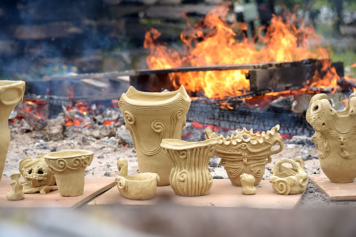
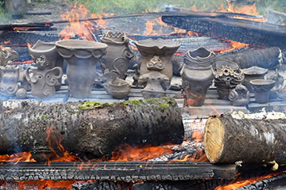

― これまでのイベント（記録） ―
| （画像をクリックで拡大します） |
「第22回春の縄文野焼き祭り」が開催されました。
前日の激しい雨も夜半には止み、朝4時半、たくさん湿気を含んだ野炉を乾かすため木材に点火。
日が昇る前に地べたの状態を整えて今日の縄文野焼きに備えます。
天候を心配して6時過ぎには早々とスタッフが集まり始めました。
幸いにも今日の予報は晴れ！ 縄文野焼きスタートです。
| （画像をクリックで拡大します） | |
=∴=∵=∴=∵=∴=∵=∴=∵=∴=∵=∴=∵=∴=∵=∴=∵=∴=∵=∴=∵=∴=∵=∴=∵=∴=∵=∴=
今回の祭りでは2つの野炉を設けて、従来の男性中心の野焼きに加え「女たちの縄文野焼き」に挑戦しました。
男たちの縄文野焼きは村上原野を中心にスタッフ8人、女たちの縄文野焼きは猪風来の指導のもとスタッフ
12人全員女性で臨みました。
皆気合い充分、意気高らかです。
|  | |
| （画像をクリックで拡大します） | |
=∴=∵=∴=∵=∴=∵=∴=∵=∴=∵=∴=∵=∴=∵=∴=∵=∴=∵=∴=∵=∴=∵=∴=∵=∴=∵=∴=
今回焼き上げる作品は、陶芸教室生を中心に法曽焼同好会などが作った約90点。
男たちの野炉では大型の創作土器をはじめ笠岡市の津雲貝塚や岡山大の遺跡出土の土器復元作品など見ごたえ
のある作品が並びます。
また、女たちの野炉には彼女たち自身が作ったしなやかな渦巻き文様の美しい縄文土器や土偶の創作・復元
など多彩な作品が並びます。
| （画像をクリックで拡大します） | |
=∴=∵=∴=∵=∴=∵=∴=∵=∴=∵=∴=∵=∴=∵=∴=∵=∴=∵=∴=∵=∴=∵=∴=∵=∴=∵=∴=
2つの野炉は、最初に火の周りでのあぶり焼き、野炉の真ん中に作品を入れてから徐々に火勢を上げていきます。
火の中で作品が刻々と色を変化させながら熱風を受け止め熱を蓄えていきます。
時折の強風が更に炎を散らし渦巻かせます。
スタッフたちは強い火勢をかいくぐって大小の材木を焚き続け、汗と火にまみれながら奮闘。
男たちの豪快な動き、女たちの柔らかな機敏さが際立って2つの野炉は順調にクライマックスに近づきます。
|  |

|
| （画像をクリックで拡大します） | |
=∴=∵=∴=∵=∴=∵=∴=∵=∴=∵=∴=∵=∴=∵=∴=∵=∴=∵=∴=∵=∴=∵=∴=∵=∴=∵=∴=
まずは女たちの野炉で最後の大焚き。
全員が一斉に燃えやすい材木を上にかぶせて大きな炎が天を突き「火の子宮」が出来上がりました。
続いて男たちの野炉でもクライマックスを迎え、ふたつめの火柱が天を突きました。
| （画像をクリックで拡大します） | |
=∴=∵=∴=∵=∴=∵=∴=∵=∴=∵=∴=∵=∴=∵=∴=∵=∴=∵=∴=∵=∴=∵=∴=∵=∴=∵=∴=
次第にゆるやかになっていく炎の中から現れる土器や土偶、火のパワーを宿し温かな赤みを帯びて、初々しい
命の誕生！
こうしてすべての作品が無事に産まれ出ることが出来、スタッフはもちろん見学していた方々からも思わず
拍手が沸き起こりました。
岡山・倉敷・総社などの岡山県内からはもちろん、遠くは大阪、広島、香川、鳥取などから縄文ファンが200人
以上が参加してくれました。
| （画像をクリックで拡大します） | |
=∴=∵=∴=∵=∴=∵=∴=∵=∴=∵=∴=∵=∴=∵=∴=∵=∴=∵=∴=∵=∴=∵=∴=∵=∴=∵=∴=
《女たちの縄文野焼き》初挑戦！
「縄文土器は女性たちが作っていたの」
「その造形には母なる大地から生まれる、すべての生命を育んで抱き繋いでいく縄文のスピリットがあるの」
「“女たちの縄文野焼き”を実現したい！」
――猪風来美術館陶芸教室で土器作りを体験し、1万年以上続いた縄文時代の豊かな精神世界に学ぶうちに自然と女たちから声が上がり、いまその挑戦が始まりました。
『縄文野焼きの心と技を学ぼう』と題した猪風来縄文塾を通して学んだ天と地、太陽と風と火の力をかりた縄文野焼きの実践。
そして迎えた4月29日『春の縄文野焼き祭り』、わが身を火の前に投げ出しつつ炎の中で土器が命を宿して生まれてくる瞬間の感動を分かち合いました。
野炉から生まれたばかりの熱気に満ちた土器・土偶の愛おしさ、全身で感受する大地や自然との一体感。
歩き出したばかりの「女たちの縄文」のはじめの一歩、しかし確かな足音が大地に響いています。
| （画像をクリックで拡大します） | |
=∴=∵=∴=∵=∴=∵=∴=∵=∴=∵=∴=∵=∴=∵=∴=∵=∴=∵=∴=∵=∴=∵=∴=∵=∴=∵=∴=
《縄文体験コーナー》
～縄文土器で煮炊きをしてみよう！～
ふたつの土器を使用して、タカキビのだんご汁を作りました。
水漏れを防ぐためにまず澱粉糊を内側に塗っておきます（新しい土器には特に念入りに）。
今回の土器はもう4～5回は使っているのでさっとでも大丈夫です。
土器のまわりに薪をくべて空焚きし十分に熱くなったら水を入れます。
薪をどんどんくべて一度沸騰すると野菜やキノコ、お肉や団子を入れて味付けするだけ。
あたたかい土器汁はあっという間にぺろりとみんなのお腹の中に。
| （画像をクリックで拡大します） | |
=∴=∵=∴=∵=∴=∵=∴=∵=∴=∵=∴=∵=∴=∵=∴=∵=∴=∵=∴=∵=∴=∵=∴=∵=∴=∵=∴=
～粘土でつくろう縄文オブジェ～
縄文粘土で土器や土偶、オブジェ作りに挑戦。
独創的なカタチに縄文を施してみるといかにも縄文気分な素敵な作品になりました。
これらの作品は5～6月中に焼き上げます。
～石で勾玉をつくろう～
白・黒・ピンクの中から好きな石を選んで勾玉を作ります。
ヤスリでこすって、こすって、こすってひたすらこすって、石の粉だらけになってやっと勾玉完成です。
小さい子も大人も粉まみれになりながら夢中。
勾玉は命の根源のカタチです。
| （画像をクリックで拡大します） | |
=∴=∵=∴=∵=∴=∵=∴=∵=∴=∵=∴=∵=∴=∵=∴=∵=∴=∵=∴=∵=∴=∵=∴=∵=∴=∵=∴=
《販売コーナー》
地元法曽焼同好会女性会員の皆さんが大奮闘。
昼食には手打うどん・猪カレーうどん・猪カレーライスなどが提供されました。
飲み物・お菓子や地元特産品法曽茶・法曽焼の販売も。
熊本災害への支援チャリティーとしてポップコーン実演販売も行われました。
| （画像をクリックで拡大します） | |
=∴=∵=∴=∵=∴=∵=∴=∵=∴=∵=∴=∵=∴=∵=∴=∵=∴=∵=∴=∵=∴=∵=∴=∵=∴=∵=∴=

|

|
| 【「第22回 春の縄文野焼き祭り」チラシ】 →PDF版を開く |